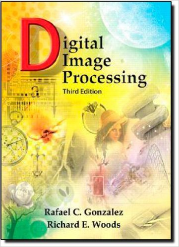

ENEE631 Digital Image Processing Week Journal
@Zhuoyu Li, University of Maryland, College Park
This is my digital image processing week journal website. In here, I record interesting topics implementing image processing alogrithm discussed in ENEE631 course.
Website contest including:
- Matlab Warmingup
- Webjournals
- Week 2 Histogram & Quantization
- Week 3 Spaital Mask
- Week 4 Spaital Filter (Time-Domain)
- Week 5 Spatial Filter (Freqency-Domain)
- Week 6 Watermark & Graglevel Morphology
- Week 8 Pseudocolor Image processing
- Week 11 Multiresolution processing & DCT_based Watermark insertion and extraction
- Week 13 Hough transform & Harris corner detection